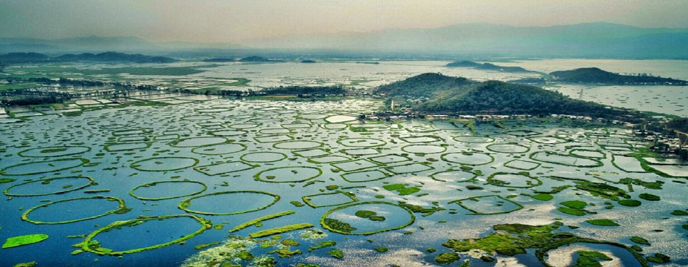
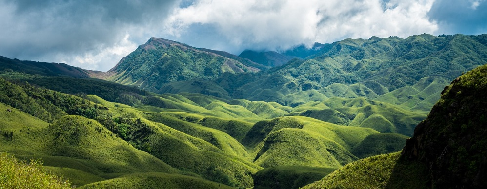

Loktak Lake
For any visitor, the principal attraction of the state is the Loktak Lake in Bishnupur District which is 48kms from Imphal City and it is the largest fresh water lake in the North–East India. It is a beautiful stretch of water resembling a miniature inland sea. A day spent at Loktak Lake is a lifetime of memory. Visitors can catch a bird’s eye view of the lake from Sendra. Fishermen living in floating islands called Phumdis in floating huts known as Phumsangs are unique sights of this lake. The Sendra Tourist Home with an attached Cafeteria is a sought after tourist spot. Boating and other water sports are organised here at Takmu Water Sports Complex.
Keibul Lamjao National Park
The only floating National Park in the world, the Keibul Lamjao National Park located on the Loktak Lake is the last natural habitat of the “Sangai” (Rucervus eldii eldii), the dancing deer of Manipur. A glimpse of the deer in this unique wetland ecosystem is a must for any wildlife enthusiast. Other wildlife to be seen include: Hog Deer, Otter, a host of water fowls and migratory birds, the latter usually sighted during November to March. The Forest Department of Manipur maintains watch towers and two rest houses within the park.
INA Memorial
This town in Bishnupur District of Moirang has a special place in the history of India’s Freedom Struggle. It was at Moirang that the flag of the Indian National Army was first unfurled on April 14, 1944. The INA Museum which has a collection of letters, photographs, badges of ranks and other war memorabilia reminds the visitors of the noble sacrifices made by the INA soldiers under the charismatic leadership of Netaji Subhas Chandra Bose.
.jpg)
Red Hills (Maibam Lokpaching)
Red Hill in Bishnupur District of Manipur, is a hillock about 16 kilometers away from Imphal on the Tiddim Road. It is a site where the British and Japanese soldiers fought a fierce battle during World War-II. War Veterans constructed “India Peace Memorial”, a monument in memory of Japanese soldiers who died in the battle. It is also a place of pilgrimage for Japanese tourists.

Kangla
The centre of Manipur’s power till 1891, the historical embodiment of Manipur Rulers and the people of Manipur, Kangla have a significant place in the heart and mind of the people of Manipur Govindajee temple, outer and inner moat and other relics are perfect reflections of the rich art and culture of Manipur and her civilization.

Kangla Nongpok Torban
Kangla Nongpok Torban was developed under the Imphal Smart City Limited along the Imphal River. The spot is an open stretch of around 700 metres, starting from the foot of Sanjenthong Bridge to the Nongpok Thong (bridge) of Kangla Fort.
On this stretch, there are facilities for an open gym, walking track, cycling track, exercise arena, food plaza, kiosks and a performance stage. Besides, the beautiful lighting system of the place is a special attraction, drawing huge crowds during dusk at this recreational space that opens from 5 am to 7 pm. However, the ticket counter closes at 6.30 pm.
Khongjom War Memorial
Khongjom war memorial is located on Indo-Myanmar highway, 36 kilometers away from Imphal, capital of Manipur. It is a memorial for three Manipuri Meitei Heroes who sacrificed their life in a battle faught between them and occupying British forces in 1891. The entrance is arch like sructure with three pillars with human figures and three cannon, each symboling their three martyrs, then three lions statue, ponds and finally a memorial monument on a hillock made of three high towers. This site is still under construction. We did not find any restaurant nearby. One hour is sufficient to visit this place. We visited it on the way returning from the border town of Moreh.
Sadu Chiru Waterfall
About 25 km from the Imphal, the capital city of Manipur, there is located Sadu Chiru Waterfalls - a picture-perfect attraction for all the nature lovers who wish to seek a delighting holiday time in Senapati. Also esteemed as the Leimaram Waterfall, Sadu Chiru is a tourist place of scenic beauty. Cascading from a height of nearly 300 metres, Sadu Chiru Waterfall makes an enthralling sight for tourists to savour. Besides, the mist emerging from the water that disperses in the surrounding is something that conjures up the images of serenity. The route to the falls initially cuts through the forest and foliage and finally a climb up stone steps. However, all the efforts to reach this beautiful tourist destination in Senapati are worthy enough to relish the exquisite beauty of Sadu Chiru Waterfall.
Moreh
This is a busy market town on the Indo-Myanmar border, located at a distance of 110 kms. from Imphal. A commercial town and a real shopping paradise for shoppers where sundry products ranging from electronics to daily consumables are available in plenty. This place holds importance for the visiting tourists not only for being a border town but also for providing a unique opportunity to experience the different cultures, lifestyles of Myanmar through its border town at Tamu which is only 5 kms. away from here. There are ample hotels of medium range providing comfortable stay at Moreh.

Dzuko Valley
Dotted with lush green forests, gorgeous valleys, crystal clear water and sedating ambiance, Dzukou Valley in Senapati district is often touted as an epitome of eternal beauty. Situated on the border of Nagaland and Manipur, Dzukou Valley is a paradise of exquisite landscapes that consist of the misty clouds and gorgeous valleys. Throughout the year, this place welcomes tourists and spellbinds them with its enduring grandeur. However, what catches the eyes of tourists most are the countless seasonal flowers that take the exquisiteness of this places to a different level in summer; the views of which is mind-boggling in itself. Besides, this gorgeous tourist destination in Senapati district is also engirdled by the two streams - Japfu and Dzukou. Since Dzukou Valley enclosed by the imposing Japfu hill ranges, the place is also an ideal destination for those adventurers who love to break a sweat through hiking and trekking.

Ima Keithel (Ima Market)
Probably the largest market of its kind in the world, Ima Keithel is famous as an all-women’s market and attracts tourists and locals alike. It is an amazing sight to see local women dressed in traditional phaneks (long skirts tightly draped around the waist) and innaphis (shoulder drapes very similar to shawls) setting up their shops and stalls every morning as they get ready to welcome scores of customers. The market is truly a paradise for shopping-lovers. From fresh fruits, vegetables and spices to textiles, handicrafts and wicker products, the shops in the bustling market cater to all the needs of locals and tourists. The word ‘Ima’ means mother and there are around 5,000 imas running stalls on both sides of the road at the Ima Keithel. Located at the heart of Imphal, the 500-year-old market has been an important trading hub of the state and continues to draw a large number of buyers on a daily basis. According to historians and researchers, the market's all-women workforce originated after the Lallup-Kaba, an ancient forced labour system, was enforced in Manipur.

MAPAL KANGJEIBUNG(WORLD’S OLDEST LIVING POLOGROUND)
Modern polo, as we all know it today, traces its origins in the Manipuri game of Sagol Kangjei. Traditionally, this sport was played on the back of the Manipuri pony, a special breed used since ancient times. This game was to test the king’s martial and cavalry skills. Don’t miss to explore the world’s oldest polo ground!
Games happen on variable days through the October-to-May season (admission is often free), and an international tournament is staged during the Sangai Festival in November with all teams riding the small but agile Manipuri breed of polo pony.

KHONGHAMPAT ORCHIDARIUM
The paradise of Orchids, Khonghampat Orchidarium is the Orchid yard maintained by the Forest Department of Manipur. It is located on National Highway No.39 which is only 7 km from the capital city Imphal. Here the colourful flowers are waiting to greet you with sweet fragrance and wonderful views. A visit to Khonghampat Orchidarium is a trip to a different world altogether. This place is dotted with more than 110 varieties of orchids, including several rare species. The best time to visit this place is from April to May. An interesting thing about this place is that some of the orchids grown here have been fashioned by nature to resemble creatures like lizards, moths and bees.
Cymbidium orchids grown here are admired the most. Among all the orchids, Cattleya is the most exotic. Khonghampat Orchidarium is also a home to some of the endangered types of orchids which are rarely found in other parts of the world. It also shelters Denrobium which is the second largest orchid genus.
Available in colours like pink and yellow, Phalaenopsis orchids are grown in abundance in Khonghampat Orchidarium. They are usually used during weddings. Vanda orchids producing colourful flowers is one of the attractive orchids here.

Shirui Hills
The Shiri-Kashong range in Manipur is home to the majestic Shirui Hills, known for the rare Shirui lily, the state flower of Manipur. The pinkish-white flower is found only in the Shirui Hill Range and can be seen in full bloom for a few months starting from mid-May every year. The rare flower has been awarded by the Royal Horticultural Society at its flower show in London. Apart from Shirui lily, visitors can also witness more than 1,000 different flowering plants like rare orchids, rhododendrons like horamwon, shirungwon, khongwon, sirawon, phanwon, tipkhawon and other natural herbs. The Shirui Hill range is also home to several endangered species of birds, including Manipur's state bird, Nongyin or Mrs Hume's bar-packed pheasant. The picturesque beauty of Shirui Hills, the splendid views it offers and its rich biodiversity make it one of the most popular attractions in Manipur and a perfect place to unwind in the lap of nature.

IMPHAL WAR CEMETERY
A poignant site dedicated to soldiers who sacrificed their lives in the battle against Japanese forces during World War II. Maintained by the Commonwealth War Graves Commissions it is the final resting place for 1600 Commonwealth service personnel. Each memorial bears the insignia of each of the fallen soldier in brass plaques. A trip to Imphal is not complete without paying tributes at this historic site.